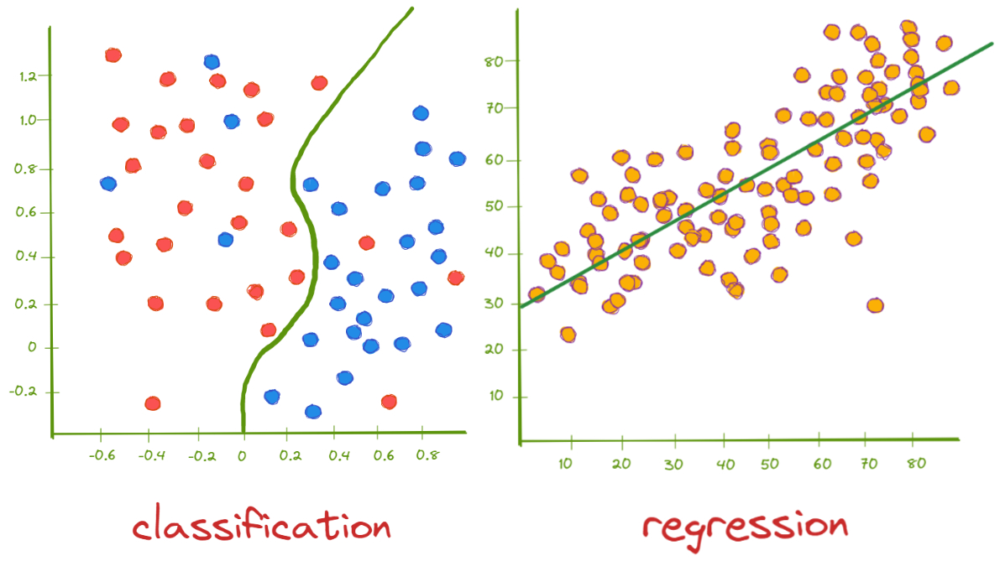
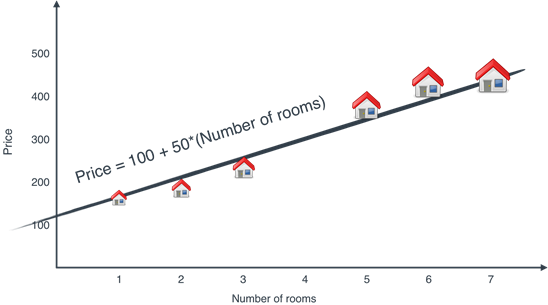
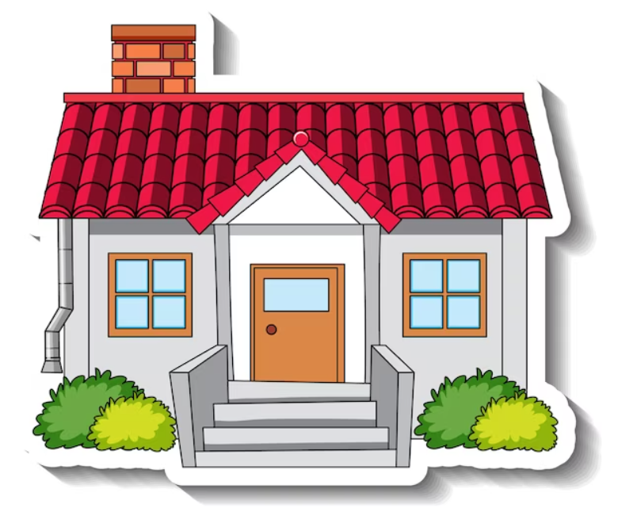
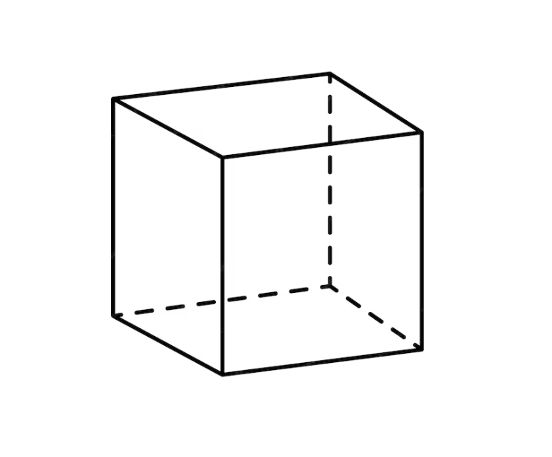
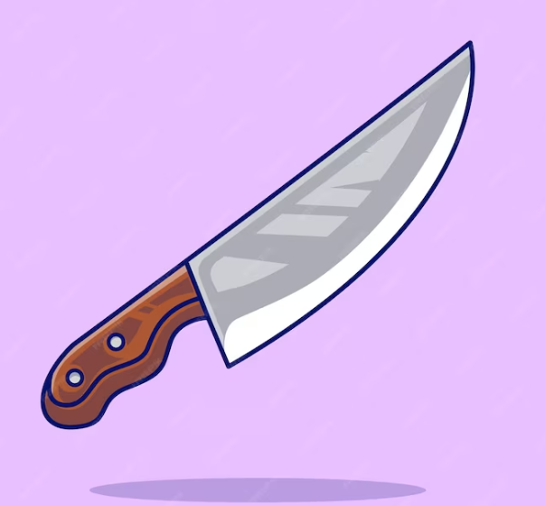
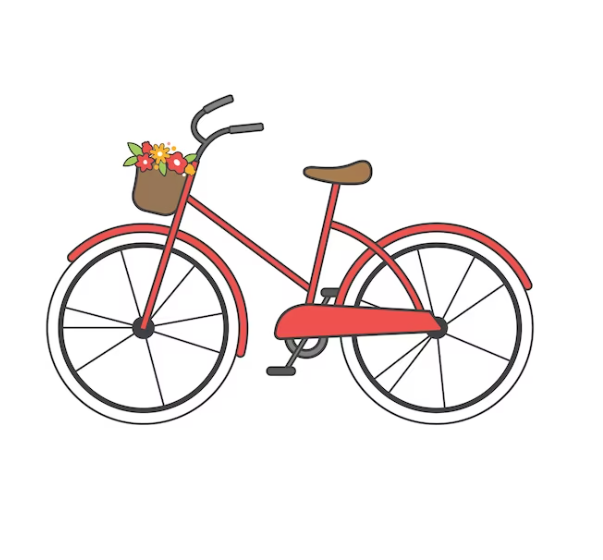
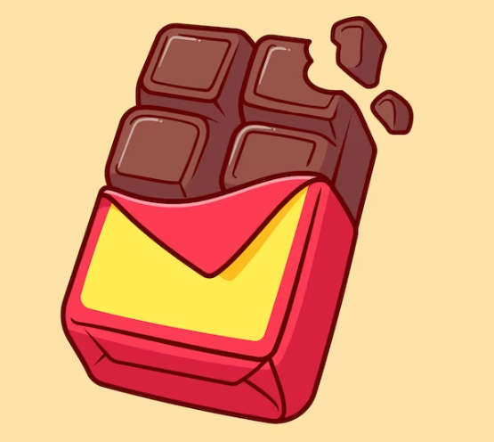
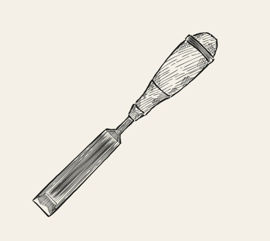
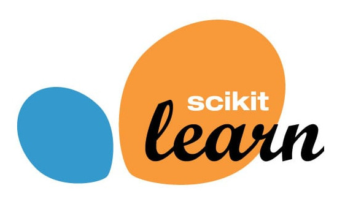

Diplomado Transformación Digital
M3 - Semana 02
2026-05-21
Tipos de Aprendizaje

demo
<!DOCTYPE html>
<html lang="es">
<head>
<meta charset="UTF-8">
<meta name="viewport" content="width=device-width, initial-scale=1.0">
<title>Herramientas IA Generativa</title>
<link href="https://fonts.googleapis.com/css2?family=Syne:wght@400;700;800&family=DM+Sans:wght@300;400;500&display=swap" rel="stylesheet">
<style>
*, *::before, *::after { box-sizing: border-box; margin: 0; padding: 0; }
:root {
--plagios: #a78bfa;
--pres: #60a5fa;
--av: #34d399;
--pdf: #f472b6;
--acad: #fbbf24;
--revision: #fb923c;
--datos: #f87171;
--escritura: #818cf8;
--bg: #0a0a1a;
--card: #13132a;
}
body {
background: var(--bg);
font-family: 'DM Sans', sans-serif;
color: #e2e8f0;
min-height: 100vh;
display: flex;
flex-direction: column;
align-items: center;
padding: 40px 20px 60px;
overflow-x: hidden;
}
h1 {
font-family: 'Syne', sans-serif;
font-size: clamp(1.4rem, 3vw, 2.2rem);
font-weight: 800;
text-align: center;
letter-spacing: -0.02em;
margin-bottom: 8px;
background: linear-gradient(135deg, #e0e7ff, #a5b4fc, #818cf8);
-webkit-background-clip: text;
-webkit-text-fill-color: transparent;
}
.subtitle {
font-size: 0.9rem;
color: #64748b;
margin-bottom: 50px;
font-weight: 300;
letter-spacing: 0.1em;
text-transform: uppercase;
}
.wheel-wrapper {
position: relative;
width: min(700px, 92vw);
height: min(700px, 92vw);
margin-bottom: 60px;
}
.wheel-svg {
width: 100%;
height: 100%;
filter: drop-shadow(0 0 40px rgba(99,102,241,0.3));
animation: spin-in 1.2s cubic-bezier(0.34,1.56,0.64,1) both;
}
@keyframes spin-in {
from { opacity: 0; transform: scale(0.7) rotate(-30deg); }
to { opacity: 1; transform: scale(1) rotate(0deg); }
}
.sector-path {
cursor: pointer;
transition: opacity 0.2s, filter 0.2s;
opacity: 0.85;
}
.sector-path:hover {
opacity: 1;
filter: brightness(1.25) drop-shadow(0 0 12px currentColor);
}
.sector-path.dimmed { opacity: 0.2; }
.sector-path.active { opacity: 1; filter: brightness(1.3) drop-shadow(0 0 18px currentColor); }
.center-circle {
cursor: pointer;
}
/* Info panel */
.info-panel {
width: min(700px, 92vw);
background: var(--card);
border-radius: 20px;
padding: 0;
overflow: hidden;
border: 1px solid rgba(255,255,255,0.06);
box-shadow: 0 20px 60px rgba(0,0,0,0.4);
transition: all 0.4s cubic-bezier(0.34,1.2,0.64,1);
max-height: 0;
opacity: 0;
}
.info-panel.visible {
max-height: 500px;
opacity: 1;
margin-bottom: 40px;
}
.panel-header {
display: flex;
align-items: center;
gap: 16px;
padding: 24px 28px 20px;
border-bottom: 1px solid rgba(255,255,255,0.06);
}
.panel-dot {
width: 14px;
height: 14px;
border-radius: 50%;
flex-shrink: 0;
}
.panel-title {
font-family: 'Syne', sans-serif;
font-size: 1.25rem;
font-weight: 700;
}
.panel-emoji {
font-size: 1.5rem;
margin-left: auto;
}
.tools-grid {
display: grid;
grid-template-columns: repeat(auto-fill, minmax(140px, 1fr));
gap: 12px;
padding: 24px 28px;
}
.tool-card {
background: rgba(255,255,255,0.04);
border-radius: 12px;
padding: 14px 16px;
border: 1px solid rgba(255,255,255,0.07);
transition: transform 0.2s, background 0.2s;
animation: pop-in 0.3s cubic-bezier(0.34,1.56,0.64,1) both;
}
.tool-card:hover {
transform: translateY(-3px);
background: rgba(255,255,255,0.08);
}
@keyframes pop-in {
from { opacity: 0; transform: scale(0.8) translateY(8px); }
to { opacity: 1; transform: scale(1) translateY(0); }
}
.tool-name {
font-weight: 500;
font-size: 0.9rem;
color: #e2e8f0;
}
.tool-desc {
font-size: 0.72rem;
color: #64748b;
margin-top: 3px;
line-height: 1.4;
}
/* Legend */
.legend {
display: grid;
grid-template-columns: repeat(auto-fill, minmax(200px, 1fr));
gap: 10px;
width: min(700px, 92vw);
animation: fadeUp 0.8s 0.8s both;
}
@keyframes fadeUp {
from { opacity: 0; transform: translateY(20px); }
to { opacity: 1; transform: translateY(0); }
}
.legend-item {
display: flex;
align-items: center;
gap: 10px;
padding: 10px 14px;
background: var(--card);
border-radius: 10px;
cursor: pointer;
border: 1px solid rgba(255,255,255,0.05);
transition: background 0.2s, transform 0.2s;
}
.legend-item:hover { background: rgba(255,255,255,0.07); transform: translateX(4px); }
.legend-dot {
width: 10px;
height: 10px;
border-radius: 50%;
flex-shrink: 0;
}
.legend-label {
font-size: 0.82rem;
font-weight: 500;
color: #cbd5e1;
}
.hint {
font-size: 0.78rem;
color: #475569;
text-align: center;
margin-bottom: 24px;
letter-spacing: 0.05em;
}
</style>
</head>
<body>
<h1>Herramientas de Inteligencia Artificial Generativa</h1>
<p class="subtitle">Haz clic en cada sector para explorar las herramientas</p>
<div class="wheel-wrapper">
<svg class="wheel-svg" viewBox="-10 -10 520 520" id="wheel">
<defs>
<filter id="glow">
<feGaussianBlur stdDeviation="3" result="coloredBlur"/>
<feMerge><feMergeNode in="coloredBlur"/><feMergeNode in="SourceGraphic"/></feMerge>
</filter>
</defs>
<!-- Sectors drawn via JS -->
</svg>
</div>
<div class="info-panel" id="infoPanel">
<div class="panel-header">
<div class="panel-dot" id="panelDot"></div>
<div class="panel-title" id="panelTitle"></div>
<div class="panel-emoji" id="panelEmoji"></div>
</div>
<div class="tools-grid" id="toolsGrid"></div>
</div>
<p class="hint">↑ Haz clic en un sector de la rueda o en la leyenda</p>
<div class="legend" id="legend"></div>
<script>
const CX = 250, CY = 250, R_OUTER = 240, R_INNER = 90, R_LABEL = 175, R_ICON = 210;
const sectors = [
{
id: "plagios",
label: "Detectar\nPlagios",
emoji: "🔍",
color: "#a78bfa",
tools: [
{name:"Copyleaks", desc:"Detección avanzada de plagio y contenido IA"},
{name:"ZeroGPT", desc:"Identifica texto generado por IA"},
{name:"GPTZero", desc:"Analiza escritura humana vs IA"},
{name:"Turnitin", desc:"Estándar académico anti-plagio"},
]
},
{
id: "pres",
label: "Crear\nPresentaciones",
emoji: "🎨",
color: "#60a5fa",
tools: [
{name:"Gamma", desc:"Presentaciones con IA en segundos"},
{name:"SlidesAI", desc:"Convierte texto en slides"},
{name:"Pixelcut", desc:"Diseño gráfico con IA"},
{name:"Clipdrop", desc:"Edición de imágenes inteligente"},
{name:"OpenArt", desc:"Generación de arte con IA"},
]
},
{
id: "av",
label: "Crear Audio\ny Video",
emoji: "🎬",
color: "#34d399",
tools: [
{name:"Pictory", desc:"Convierte texto a video"},
{name:"HeyGen", desc:"Avatares con IA para video"},
{name:"D-ID", desc:"Videos con presentadores digitales"},
{name:"Vidyo.ai", desc:"Recorta clips virales con IA"},
{name:"CapCut", desc:"Editor de video con IA integrada"},
{name:"Runway", desc:"Efectos y generación de video"},
{name:"Synthesia", desc:"Video corporativo con avatares"},
{name:"Soundraw", desc:"Música generada por IA"},
]
},
{
id: "pdf",
label: "Extraer info\nde PDF",
emoji: "📄",
color: "#f472b6",
tools: [
{name:"Humata", desc:"Pregunta sobre tus documentos"},
{name:"ChatPDF", desc:"Chatea con cualquier PDF"},
{name:"ChatDOC", desc:"Analiza documentos con IA"},
{name:"AskYourPDF", desc:"Extrae respuestas de PDFs"},
]
},
{
id: "acad",
label: "Redacción\nAcadémica",
emoji: "🎓",
color: "#fbbf24",
tools: [
{name:"Trinka", desc:"Corrección para ciencia y academia"},
{name:"Jenni", desc:"Asistente de escritura académica"},
{name:"Elicit", desc:"Busca y resume papers científicos"},
{name:"Consensus",desc:"Respuestas basadas en evidencia"},
]
},
{
id: "revision",
label: "Edición y\nRevisión",
emoji: "✏️",
color: "#fb923c",
tools: [
{name:"Inger", desc:"Corrección de textos científicos"},
{name:"Wordvice", desc:"Edición y paráfrasis con IA"},
{name:"Paperpal", desc:"Revisión académica en tiempo real"},
{name:"Smodin", desc:"Reescritura y paráfrasis"},
{name:"Writefull", desc:"Revisión de lenguaje académico"},
]
},
{
id: "datos",
label: "Visualización\nde Datos",
emoji: "📊",
color: "#f87171",
tools: [
{name:"Akkio", desc:"Análisis predictivo sin código"},
{name:"Polymer", desc:"Explora datos con IA"},
{name:"MonkeyLearn",desc:"Text analytics automático"},
{name:"Julius AI", desc:"Analiza datos en lenguaje natural"},
]
},
{
id: "escritura",
label: "Escritura\nAsistida",
emoji: "🖊️",
color: "#818cf8",
tools: [
{name:"ChatGPT", desc:"Asistente conversacional de OpenAI"},
{name:"Jasper", desc:"Copywriting y marketing con IA"},
{name:"Otter.ai", desc:"Transcripción automática de audio"},
{name:"DeepL", desc:"Traducción de alta calidad"},
{name:"Reverso", desc:"Traducción y conjugación"},
{name:"Piktochart",desc:"Infografías con IA"},
]
},
];
const n = sectors.length;
const angleStep = (2 * Math.PI) / n;
const startOffset = -Math.PI / 2;
function polarToXY(cx, cy, r, angle) {
return [cx + r * Math.cos(angle), cy + r * Math.sin(angle)];
}
function sectorPath(i) {
const a1 = startOffset + i * angleStep + 0.015;
const a2 = startOffset + (i + 1) * angleStep - 0.015;
const [x1, y1] = polarToXY(CX, CY, R_OUTER, a1);
const [x2, y2] = polarToXY(CX, CY, R_OUTER, a2);
const [x3, y3] = polarToXY(CX, CY, R_INNER, a2);
const [x4, y4] = polarToXY(CX, CY, R_INNER, a1);
return `M ${x1} ${y1} A ${R_OUTER} ${R_OUTER} 0 0 1 ${x2} ${y2} L ${x3} ${y3} A ${R_INNER} ${R_INNER} 0 0 0 ${x4} ${y4} Z`;
}
const svg = document.getElementById('wheel');
let activeIndex = null;
// Draw sectors
sectors.forEach((s, i) => {
const midAngle = startOffset + (i + 0.5) * angleStep;
// Sector path
const path = document.createElementNS("http://www.w3.org/2000/svg","path");
path.setAttribute("d", sectorPath(i));
path.setAttribute("fill", s.color);
path.setAttribute("class","sector-path");
path.setAttribute("data-i", i);
svg.appendChild(path);
// Emoji icon
const [ex, ey] = polarToXY(CX, CY, R_ICON, midAngle);
const emojiEl = document.createElementNS("http://www.w3.org/2000/svg","text");
emojiEl.setAttribute("x", ex);
emojiEl.setAttribute("y", ey);
emojiEl.setAttribute("text-anchor","middle");
emojiEl.setAttribute("dominant-baseline","central");
emojiEl.setAttribute("font-size","22");
emojiEl.setAttribute("style","pointer-events:none;");
emojiEl.textContent = s.emoji;
svg.appendChild(emojiEl);
// Label
const [lx, ly] = polarToXY(CX, CY, R_LABEL, midAngle);
const lines = s.label.split("\n");
const text = document.createElementNS("http://www.w3.org/2000/svg","text");
text.setAttribute("x", lx);
text.setAttribute("y", ly);
text.setAttribute("text-anchor","middle");
text.setAttribute("dominant-baseline","central");
text.setAttribute("font-family","Syne, sans-serif");
text.setAttribute("font-weight","700");
text.setAttribute("fill","#0a0a1a");
text.setAttribute("style","pointer-events:none;");
lines.forEach((line, li) => {
const tspan = document.createElementNS("http://www.w3.org/2000/svg","tspan");
tspan.setAttribute("x", lx);
tspan.setAttribute("dy", li === 0 ? (lines.length > 1 ? "-0.55em" : "0") : "1.2em");
tspan.setAttribute("font-size", lines[0].length > 8 ? "11" : "12");
tspan.textContent = line;
text.appendChild(tspan);
});
svg.appendChild(text);
// Click
path.addEventListener("click", () => toggleSector(i));
});
// Center circle
const centerGroup = document.createElementNS("http://www.w3.org/2000/svg","g");
centerGroup.setAttribute("class","center-circle");
const centerBg = document.createElementNS("http://www.w3.org/2000/svg","circle");
centerBg.setAttribute("cx", CX); centerBg.setAttribute("cy", CY);
centerBg.setAttribute("r", R_INNER - 4);
centerBg.setAttribute("fill","#0a0a1a");
centerBg.setAttribute("stroke","rgba(255,255,255,0.1)");
centerBg.setAttribute("stroke-width","2");
const centerGlow = document.createElementNS("http://www.w3.org/2000/svg","circle");
centerGlow.setAttribute("cx", CX); centerGlow.setAttribute("cy", CY);
centerGlow.setAttribute("r", R_INNER - 10);
centerGlow.setAttribute("fill","url(#cgradient)");
centerGlow.setAttribute("opacity","0.3");
const defs = document.createElementNS("http://www.w3.org/2000/svg","defs");
const cgradient = document.createElementNS("http://www.w3.org/2000/svg","radialGradient");
cgradient.setAttribute("id","cgradient");
const stop1 = document.createElementNS("http://www.w3.org/2000/svg","stop");
stop1.setAttribute("offset","0%"); stop1.setAttribute("stop-color","#818cf8");
const stop2 = document.createElementNS("http://www.w3.org/2000/svg","stop");
stop2.setAttribute("offset","100%"); stop2.setAttribute("stop-color","#0a0a1a");
cgradient.appendChild(stop1); cgradient.appendChild(stop2);
defs.appendChild(cgradient);
svg.insertBefore(defs, svg.firstChild);
const centerText1 = document.createElementNS("http://www.w3.org/2000/svg","text");
centerText1.setAttribute("x", CX); centerText1.setAttribute("y", CY - 12);
centerText1.setAttribute("text-anchor","middle");
centerText1.setAttribute("font-family","Syne, sans-serif");
centerText1.setAttribute("font-weight","800");
centerText1.setAttribute("font-size","13");
centerText1.setAttribute("fill","#e2e8f0");
centerText1.textContent = "Herramientas";
const centerText2 = document.createElementNS("http://www.w3.org/2000/svg","text");
centerText2.setAttribute("x", CX); centerText2.setAttribute("y", CY + 6);
centerText2.setAttribute("text-anchor","middle");
centerText2.setAttribute("font-family","Syne, sans-serif");
centerText2.setAttribute("font-weight","800");
centerText2.setAttribute("font-size","13");
centerText2.setAttribute("fill","#e2e8f0");
centerText2.textContent = "IA Generativa";
const centerEmoji = document.createElementNS("http://www.w3.org/2000/svg","text");
centerEmoji.setAttribute("x", CX); centerEmoji.setAttribute("y", CY + 28);
centerEmoji.setAttribute("text-anchor","middle");
centerEmoji.setAttribute("font-size","18");
centerEmoji.textContent = "🤖";
centerGroup.appendChild(centerBg);
centerGroup.appendChild(centerGlow);
centerGroup.appendChild(centerText1);
centerGroup.appendChild(centerText2);
centerGroup.appendChild(centerEmoji);
svg.appendChild(centerGroup);
centerGroup.addEventListener("click", () => closePanel());
// Legend
const legend = document.getElementById("legend");
sectors.forEach((s, i) => {
const item = document.createElement("div");
item.className = "legend-item";
item.innerHTML = `<div class="legend-dot" style="background:${s.color}"></div><span class="legend-label">${s.emoji} ${s.label.replace("\n"," ")}</span>`;
item.addEventListener("click", () => toggleSector(i));
legend.appendChild(item);
});
// Panel logic
function toggleSector(i) {
if (activeIndex === i) { closePanel(); return; }
activeIndex = i;
updateSectorStyles();
showPanel(i);
}
function closePanel() {
activeIndex = null;
updateSectorStyles();
const panel = document.getElementById("infoPanel");
panel.classList.remove("visible");
}
function updateSectorStyles() {
document.querySelectorAll(".sector-path").forEach(p => {
const pi = parseInt(p.getAttribute("data-i"));
p.classList.remove("active","dimmed");
if (activeIndex !== null) {
if (pi === activeIndex) p.classList.add("active");
else p.classList.add("dimmed");
}
});
}
function showPanel(i) {
const s = sectors[i];
const panel = document.getElementById("infoPanel");
const dot = document.getElementById("panelDot");
const title = document.getElementById("panelTitle");
const emoji = document.getElementById("panelEmoji");
const grid = document.getElementById("toolsGrid");
panel.style.borderTop = `3px solid ${s.color}`;
dot.style.background = s.color;
title.textContent = s.label.replace("\n"," ");
title.style.color = s.color;
emoji.textContent = s.emoji;
grid.innerHTML = "";
s.tools.forEach((t, ti) => {
const card = document.createElement("div");
card.className = "tool-card";
card.style.animationDelay = `${ti * 0.05}s`;
card.style.borderTop = `2px solid ${s.color}40`;
card.innerHTML = `<div class="tool-name">${t.name}</div><div class="tool-desc">${t.desc}</div>`;
grid.appendChild(card);
});
panel.classList.add("visible");
panel.scrollIntoView({behavior:"smooth", block:"nearest"});
}
</script>
</body>
</html>Reinforcement Learning


{kind=link}
En este tipo de aprendizaje se enseña por refuerzo. Es decir se da una recompensa si el sistema aprende lo que queremos.
Si el premio es mayor, se pueden obtener aprendizajes mayores.
Un ejemplo de esto es AlphaTensor en el cual un modelo aprendió una nueva manera de multiplicar matrices que es más eficiente.
Otro ejemplo es AlphaFold donde el modelo aprendió/descubrió cómo se doblan las proteínas cuando se vuelven aminoácidos.
Problemas Supervisados: Regresión y Clasificación

- Regresión: Se busca estimar un valor continuo.
(Estimar el valor de una casa).
- Clasificación: Se busca encontrar una categoría o un valor discreto.
(Clasificar una imagen como Perro o Gato).
- Para entrenar este tipo de modelos se necesitan
etiquetas, es decir, la respuesta esperada del modelo.

Clustering

- Clusters: Una categoría en la que sus componentes son similares. Los clusters normalmente no tienen un nombre propio, sino que uno les asigna uno.
- También se les llama segmentos. No usar la palabra
clase.
- No requiere de etiquetas, por lo tanto, no es posible evaluar su desempeño de manera 100% acertada.
Reducción de Dimensionalidad

- Reducción de la Dimensionalidad: Eliminar complejidad sin perder información clave para poder entender su comportamiento.
Nuestro Sistema de ML
Creemos un Sistema de ML que sea capaz de ver una imágen y pronunciar correctamente el uso de la letra C.
Vamos a Entrenar un Modelo.

Nuestro Sistema de ML: Entrenamiento

KasaKokodrilo
Kubo¿Qué patrones está aprendiendo el modelo?
- Entrenamiento
-
Es el proceso en el cuál se permite al modelo aprender. En este proceso se le entregan ejemplos (
Train Set) para que el modelo de maneraautónomapueda aprenderpatronesque le permitan resolver la tarea dada.
Nuestro Sistema de ML: Inferencia
- Inferencia/Predicción
-
Se refiere al proceso en el que el modelo tiene que demostrar cuál sería su decisión de acuerdo a los patrones aprendidos en el proceso de entrenamiento. Los ejemplos en los que se prueba se le denomina
Test Set.



Kollar
Konejo
Kukillo
Bikikleta
- Generalización
- Se le llama generalización a la capacidad del modelo de aplicar lo aprendido de manera correcta en ejemplos no vistos.
Nuestro Sistema de ML: Nuevas instancias de Entrenamiento
Kuchillo
Chokolate
SinselNo es bueno entrenar con las mismas instancias de de Test, es decir, con las cuales se evalúa el modelo. ¿Por qué?
Nuestro Sistema de ML: Reevaluemos nuestro Modelo
Kollar
Konejo
Kuchillo
Bisikleta
- Evaluación
-
Utilizar una métrica que permita
ponerle notaal modelo.
- 1er Modelo: 2 correctas de 4, es decir 50%.
- 2do Modelo: 4 correctas de 4, es decir 100%.
Problemas del Aprendizaje
Supongamos que queremos utilizar nuestro modelo para pronunciar palabras en otro idioma (otro Test Set).
¿Qué problemas podemos encontrar?
Stomach \(\rightarrow\) Stomak
Archer \(\rightarrow\) Archer
Church \(\rightarrow\) Chur
k- Church.
Archeology \(\rightarrow\) Ar
cheology- Arkeology.
Chicago \(\rightarrow\)
Chicago- Shicago.
Muscle \(\rightarrow\) Mus
kle- Mus_le.
Ich mag Schweinefleisch \(\rightarrow\) I
chmag Schweinefleisk.- Ij mag Shvaineflaish.
Claramente tenemos un problema. ¿A qué se debe esto?
Problemas del Aprendizaje: Definiciones
- Overfitting (Sobreajuste)
-
Se refiere a cuando un modelo no es capaz de generalizar de manera correcta, porque se ajusta
demasiadobien (llegando amemorizar) a los datos de entrenamiento. ¿Cómo se puede mitigar este problema?
Se le tiende a llamar sobreentrenamiento, pero no es del todo correcto para el caso de modelos de Machine Learning. Lo más correcto es que el sobreentrenamiento provoca overfitting.
- Underfitting (Subajuste)
-
Se refiere a cuando un modelo no es capaz de generalizar de manera correcta, pero a diferencia del overfitting
no se ha ajustadocorrectamente a los datos. ¿Cómo se vería el underfitting en nuestro ejemplo?
Etapas del Modelamiento: Crisp-DM
{kind=link}
Etapas del Modelamiento: KDD

Etapas del Modelamiento: Semma

Etapas del Modelamiento: Metodología Propia
{kind=link}
Preguntas para terminar
- ¿Qué tipo de modelo debo implementar si quiero estimar la temperatura del día de mañana?
- ¿Qué tipo de modelo debo implementar si es que quiero detectar barrios de acuerdo a su condición socio-economica?
- Si mi modelo aprende a resolver ejercicios de matemática.
- ¿Cómo se vería el overfitting?
- ¿Cómo se vería el underfitting?
¿Qué es Scikit-Learn?

Scikit-Learn(sklearnpara los amigos) es una librería creada por David Cournapeau, como un Google Summer Code Project y luego Matthieu Brucher en su tesis.- En 2010 queda a cargo de INRIA y tiene un ciclo de actualización de 3 meses.
- Es la librería más famosa y poderosa para hacer Machine Learning hoy en día.
- Su API es tan famosa, que hoy se sabe que una librería es de
calidadsi sigue los estándares implementados porScikit-Learn. - Para que un algoritmo sea parte de
Scikit-Learndebe poseer 3 años desde su publicación y 200+ citaciones mostrando su utilidad y amplio uso (ver acá). - Además es una librería que obliga a que sus algoritmos tengan la capacidad de generalizar.
Diseño
Scikit-Learnsigue un patrón deProgramación Orientada a Objetos (POO)basado en clases.
- En programación, una clase es un objeto que internamente contiene estados que pueden ir cambiando en el tiempo.
- Una clase posee:
- Métodos: Funciones que cambian el comportamiento de la clase.
- Atributos: Datos propios de la clase.
- Una clase posee:
Scikit-Learn sigue el siguiente estándar:
- Todas las Clases se escriben en
CamelCase: Ej:KMeans,LogisticRegression,StandardScaler. - Las clases en Scikit-Learn pueden representar algoritmos, o etapas de un preprocesamiento.
- Los algoritmos se denominan
Estimators. - Los preprocesamientos se denominan
Transformers.
- Los algoritmos se denominan
- Las funciones se escriben como
snake_casey permiten realizar algunas operaciones básicas en el proceso de modelamiento. Ej:train_test_split(),cross_val_score(). - Normalmente se utilizan letras mayúsculas para denotar
MatricesoDataFrames, mientras que las letras minúsculas denotanVectoresoSeries.
Estimadores No supervisados
L1. Importar la clase a utilizar.
L2. Instanciar el modelo y sus hiperparámetros.
L3. Entrenar o ajustar el modelo (Requiere sólo de X).
L5. Predecir. Los modelos de clasificación tienen la capacidad de generar probabilidades.
L7-8. Este tipo de modelos permite entrenar y predecir en un sólo paso.
Estimadores Predictivos
L1. Importar la clase a utilizar.
L2. Instanciar el modelo y sus hiperparámetros.
L3. Entrenar o ajustar el modelo (Ojo, requiere de X e y).
L5–6. Predecir en datos nuevos. (Algunos modelos pueden predecir probabilidades).
L8. Evaluar el modelo en los datos nuevos.
Output de un Modelo
- Los modelos no entregan directamente un output sino que los dejan almacenados en su interior como un estado.
- Los Estimators tienen dos estados:
- Not Fitted: Modelo antes de ser entrenado
- Fitted: Una vez que el modelo ya está entrenado. (Después de aplicar
.fit())
Muchos modelos pueden entregar información sólo luego de ser entrenados (su atributo termina con un _).
Ej: model.coef_, model.intercept_.
El modelo es una herramienta a la cual le entregamos datos (Input), y nos devuelve datos (Predicciones).
Transformers
- A diferencia de los
Estimators, losTransformersno son modelos. - Su input y su output son datos.
- Algunos
Transformerspermiten escalar los datos, transformar categorías en números, rellenar valores faltantes. (Veremos más acerca de esto en losPreprocesamiento).
L1. Importar la clase a utilizar (en este caso del submodulo preprocessing, aunque pueden haber otros como impute).
L2. Instanciar el Transformer y sus hiperparámetros.
L3. Entrenar o ajustar el Transformer.
L5. Transformar los datos.
L7-8. Adicionalmente se puede entrenar y transformar los datos en un sólo paso.
Pipelines
- En ocasiones un Dataset requiere más de un preprocesamiento.
- Estas Transformaciones normalmente se hacen en serie de manera consecutiva.

- El Estimator es opcional, es decir, el Pipeline puede ser para combinar sólo
TransformersoTransformers + un Estimator.
Un Pipeline puede tener sólo un Estimator.
Pipelines: Código
from sklearn.tree import DecisionTreeClassifier
from sklearn.preprocessing import StandardScaler, OneHotEncoder
from sklearn.pipeline import Pipeline
pipe = Pipeline(steps=[
("ohe", OneHotEncoder()),
("sc", StandardScaler()),
("model", DecisionTreeClassifier())
])
pipe.fit(X_train, y_train)
y_pred = pipe.predict(X_test)
pipe.score(X_test, y_test) L1-2. Importo mi modelo y mis preprocesamientos
L3. Importo el Pipeline.
L5-9. Instancio un Pipeline.
L11. Entreno el Pipeline.
L12. Predigo utilizando el Pipeline entrenado.
L14. Evalúo el modelo en datos no vistos.
Documentación
Probablemente
Scikit-Learntenga una de las mejores documentaciones existentes.
- Veamos el caso de la Documentación del One Hot Encoder

Preguntas para terminar
- ¿Cómo se importan las clases en Scikit-Learn?
- ¿Cuál es la diferencia entre un Transformer y un Estimator?
- ¿Cuándo es buena idea usar un Pipeline?
🎉 ¡Gracias por Participar!
🔗 Nuestro Sitio Web: sethnut.com/talks